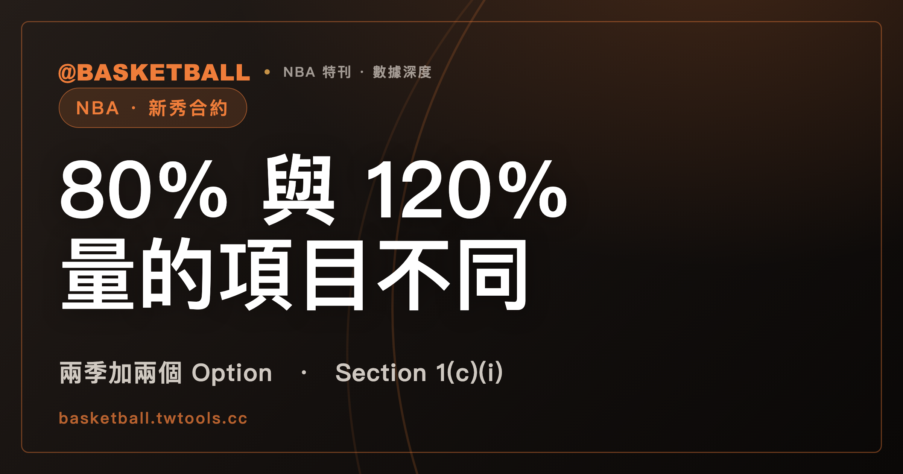

NBA 第一輪新秀合約的 80% 下限與 120% 上限，量的是兩個不同的項目
2023 NBA CBA Article VIII Section 1(c)(i) 替第一輪選中球員的 Rookie Scale Contract 寫了兩句界線：下限句要求涵蓋的兩季與第一個 Option Year，Current Base Compensation 至少為量表金額 80% 與球員適用 Minimum Player Salary 兩者中較大者；上限句規定任何 Salary Cap Year 的 Salary plus Unlikely Bonuses 不得超過量表金額 120%。

新手村｜制度入門・新秀合約
本文依據 2023 NBA Collective Bargaining Agreement（CBA）的全文文字檔，範圍是 Article VIII Section 1（第一輪選中球員的 Rookie Scale Contract）以及它引用的定義，不寫任何金額。以下條號未另註明者，都指 2023 NBA CBA Article VIII；版本與沒有展開的部分，收在文末〈範圍與版本〉。
把 80% 和 120% 合稱成一個「80% 到 120%」的區間很自然，但 Section 1(c)(i) 的兩句各自寫了量什麼、適用哪幾年。
讀完之後，你可以拿一份標明「假設」的新秀合約，自己判斷它符不符合下限句與上限句，也能算出 Option 的行使期限落在哪一天。
第一輪新秀合約涵蓋兩季，球隊另有第三季與第四季兩個 Option
Section 1(a) 把 Team 與 First Round Pick 之間的 Rookie Scale Contract 寫成兩季加兩個 Option，兩個 Option 都 in favor of the Team：
| 季 | 合約狀態 | 條文怎麼寫 |
|---|---|---|
| 第 1、2 季 | 合約涵蓋 | Rookie Scale Contract 涵蓋兩個 Seasons |
| 第 3 季 | Option | in favor of the Team |
| 第 4 季 | 第二個 Option | in favor of the Team |
Article I 對幾個詞各有定義。First Round Pick 是 Team 在 Draft 第一輪選中的球員。Rookie Scale Contract 是 First Round Pick 與持有其 draft rights 的 Team 之間，依 Article VIII Section 1 或 Section 2 簽的初次 Uniform Player Contract。Option 是 Player Contract 內讓 Team 或球員把合約延長到所載期限之後的選擇權，Option Year 則是行使 Option 時會加到合約的那一年。
本文的讀法是：(c) 款的 first Option Year 與 second Option Year，分別對應 (a) 款的第三季與第四季 Option，因為依定義，行使 Option 會加上的那一年就是 Option Year。
選秀順位怎麼來，可以看站內的選秀樂透入門；那一篇的「第 1 輪的順位，為什麼會影響新秀的合約？」一節也寫了兩季加兩個選擇權的結構。
球隊行使 Option 的窗口，從第一季或第二季結束的隔天開始，到隨後的 10 月 31 日為止
Section 1(a) 替兩個 Option 各寫了一段窗口：
| Option | 窗口起點 | 窗口終點 |
|---|---|---|
| 第三季 | 第一季結束那天的隔天 | 隨後的 10 月 31 日 |
| 第四季 | 第二季結束那天的隔天 | 隨後的 10 月 31 日 |
10 月 31 日逢 Saturday、Sunday 或 Federal Holiday 時，Rookie Scale Contract 的 Option 行使期限視為落在下一個 business day。條文括號引的是 Article XLII Section 2 的一般規則：除非另有明文，CBA 裡的時間期間包含非營業日，但落在 Saturday、Sunday 或 Federal Holiday 的 deadline 視為落在下一個 business day。
行使的方式也寫明了：由 Team 簽署的通知，告知球員 Team 已行使該 Option。通知可以當面交給球員或其代表，也可以用 email，或用預付的 certified、registered 或 overnight mail 寄到球員或其代表的最後已知地址。
量表金額看合約第一季與選秀順位，未簽約的第一輪球員從 1 月 10 日起逐日遞減
兩個百分比的基準都是 applicable Rookie Scale Amount。Section 1(b)(i) 找這個金額分兩步：合約涵蓋的第一個 Season 決定適用哪一份 Rookie Salary Scale；在那份量表之內，球員在 NBA Draft 的 selection number 決定適用的 Rookie Scale Amounts。
Rookie Salary Scale 在 Article I(hhh) 的定義是某個 Salary Cap Year 的量表，在該年 Salary Cap 確定後立即製作，內含該年調整後的 Rookie Scale Amounts。
(b)(i) 還有一句遞減規則，開頭是 Notwithstanding anything to the contrary in this Section 1(b)(i) or in Section 1(b)(ii)，意思是與 (b)(i)、(b)(ii) 其他內容相反時，以這句為準。規則是：自每個 Season 的 1 月 10 日起，尚未簽約的 First Round Pick 該 Season 的 Rookie Scale Amount 逐日遞減，直到 Regular Season 結束。每日遞減的幅度，是該 Rookie Scale Amount 乘以分子 1、分母為該 Regular Season 總天數的分數。把總天數記成 N，每天減 1/N，遞減進行 10 天就是累計減 10/N（這是算術，不是條文原句）。
Section 1(b)(ii) 另寫了一種調整：依 CBA 或 NBA Constitution and By-Laws 的任何條款，有一支以上 Team 被要求沒收（is required to forfeit）某次 NBA Draft 第一輪的一個以上選秀權時，適用 (b)(ii) 的量表調整。被沒收的是選秀權，不是 Option。
下限句：兩季與第一個 Option Year 的 Current Base Compensation，至少為量表 80% 與 Minimum Player Salary 中較大者
Section 1(c)(i) 的第一句寫：Rookie Scale Contract 在涵蓋的兩個 Seasons 與第一個 Option Year，要提供至少為下列兩者中較大者的 Current Base Compensation：(A) 適用 Rookie Scale Amount 的 80%，以及 (B) 球員適用的 Minimum Player Salary。
Current Base Compensation 的定義在 Article I(m)：Base Compensation 中扣除 Deferred Base Compensation 的部分。Base Compensation 的定義在 Article I(g)：Compensation 中扣除各類 bonuses 的部分。依這兩條定義，獎金與 Deferred Base Compensation 都不在下限句量的數字裡。
Minimum Player Salary 在 Article I(kk)(i) 的情境是：非 Two-Way Contract、涵蓋整個 Regular Season 的合約，它指 Article II Section 6(a) 的 Minimum Annual Salary。定義另有涵蓋較短期間的合約的算法，本文不展開。
「取較大者」的意思是兩個數各算一次再比。球員適用的 Minimum Player Salary 若大於量表金額的 80%，下限就是 Minimum Player Salary。
上限句：任何 Salary Cap Year 的 Salary plus Unlikely Bonuses，不得超過量表 120%
下限之後，(c)(i) 接著寫：超過上述下限的 Salary 組成部分，由個別談判決定，但有兩項限制。
第一項是上限，原句是 in no event may Salary plus Unlikely Bonuses for any Salary Cap Year exceed 120% of the applicable Rookie Scale Amount。Article I(lll) 把 Salary 定義為某個 Salary Cap Year 的 Compensation 加上依 CBA 視為 Salary 的其他金額，並且不含 Unlikely Bonuses；上限句另把 Unlikely Bonuses 加在 Salary 之上。
Unlikely Bonus 在 Article I(eeee) 的定義是依 Article VII Section 3(d) 被排除在 Salary 之外的 Incentive Compensation。與它相對的 Likely Bonus 在 Article I(ff)，是依同一款被計入 Salary 的 Incentive Compensation。哪些獎金算 Likely、哪些算 Unlikely，判定規則在 Article VII Section 3(d)。
第二項是 Rookie Scale Contract 不得有 signing bonus 或 loan。括號內有一個例外：「international player」的 payment 超過 Excluded International Player Payment Amount、並依 Article VII Section 3(e) 所付者。
另外，同一款也寫了 Rookie Scale Contract 可以在任何 Season 訂比 Uniform Player Contract Paragraph 3 更有利於球員的付款時程，仍受 CBA 其他條款限制。
照條文字面讀，下限句與上限句量的項目不同，寫的年度也不同
把 Section 1(c)(i) 的兩句並排：
| 下限句 | 上限句 | |
|---|---|---|
| 位置 | (c)(i) 第一句 | (c)(i)(1) |
| 基準 | applicable Rookie Scale Amount | applicable Rookie Scale Amount |
| 量的項目 | Current Base Compensation | Salary plus Unlikely Bonuses |
| 比較方式 | 至少為 80% 與 Minimum Player Salary 中較大者 | 不得超過 120% |
| 寫明的年度 | 涵蓋的兩個 Seasons 與第一個 Option Year | any Salary Cap Year |
表中每一格都出自條文；「兩者量的項目不同」是本文把兩句並列後的讀法，條文本身沒有寫這句話。照這個讀法，拿一份合約去對條文要算兩次：Current Base Compensation 對下限，Salary plus Unlikely Bonuses 對上限。這是照條文字面得出的讀法，不是官方的操作步驟。
年度那一列也不同：下限句逐項列舉，上限句寫 any Salary Cap Year。本文不把 any Salary Cap Year 改寫成幾年。
Section 1(c)(ii) 的 80% 是 Compensation protection，第二個 Option Year 的條款由 (c)(iii) 另寫
條文裡還有第二個 80%。Section 1(c)(ii) 寫：Rookie Scale Contract 在涵蓋的兩個 Seasons 與第一個 Option Year，必須提供 lack of skill 與 injury or illness 的 Compensation protection，不低於適用 Rookie Scale Amount 的 80%。它寫的是保障，與 (c)(i) 第一句的 Current Base Compensation 下限是不同款。保障的範圍包含 lack of skill，不限於傷病。
(c)(iii) 寫：除了 Base Compensation 的付款時程之外，第二個 Option Year 適用的條款與第一個 Option Year 相同，其中包含受保障的 Base Compensation 百分比。例外是 Salary（不含 Incentive Compensation），以及第一個 Option Year 若有 Incentive Compensation 時每筆 bonus 的金額：兩者依適用 Rookie Salary Scale 所列的百分比，比第一個 Option Year 遞增。
(c)(i) 與 (c)(ii) 的字面列到第一個 Option Year，第二個 Option Year 由 (c)(iii) 以「與第一個 Option Year 相同」的方式處理。本文不推算第二個 Option Year 有沒有獨立的 80% 字樣、金額是多少。
交易獎金讓合計超過 120% 時，Section 1(d) 把 trade bonus 視為修正到 120%
Section 1(d) 以 Notwithstanding any other provision of this Agreement 開頭。交易 Rookie Scale Contract 時，若合約內的 trade bonus 使球員在交易當年那個 Salary Cap Year 的 Salary plus Unlikely Bonuses 超過適用 Rookie Scale Amount 的 120%，這筆 trade bonus 視為修正到把合計降回 120% 所需的程度。它的計量項目與基準，都和上限句相同。
Section 2 與 Section 3 另寫沒有依 Section 1 簽約的情形
Section 2 的對象是：除 Section 3 另有規定外，在選秀後三個 Seasons 內沒有與持有其 draft rights 的 Team 簽約、且該期間未打 intercollegiate basketball 的 First Round Pick。他可以選 (a) 依 Section 1 的 Rookie Scale Contract，或 (b) 另一種合約。(b) 的前提是 Team 有超過首年 Rookie Scale Amount 的 Room 並受 Article VII 限制；合約涵蓋至少三個 Seasons（不含 Option Year），首年 Base Compensation 超過首年 Rookie Scale Amount 的 120%。這個 120% 屬於 Section 2 的另一種合約，量的是首年 Base Compensation。
Section 3 寫了 Required Tender 未發出、撤回或 renounce 等情形：此時 Section 1 與 2 的規則不適用，該 First Round Pick 成為 Rookie Free Agent。
另有三件事在 Section 1 之外。Rookie Scale Extension 不在 Section 1(c)(i) 到 (iii) 之內，站內的頂薪沒有固定數字，在首年上限的一節點到它。Team 沒有行使 Option 之後，球員成為什麼身分，Section 1 沒有寫；站內的限制性自由球員的配對權從哪來，依 2023 CBA 寫了這件事。Article VII Section 6(h) 把依 Article VIII Section 1 簽 Rookie Scale Contract 寫成 Salary Cap Exception，名稱是 Rookie Scale Exception；薪資帽、稅線與 apron 怎麼運作，可以看球隊薪資能超過薪資帽。
四道假設題：下限、上限、交易獎金與 Option 期限
以下全部是假設。為了不寫金額，把適用的 Rookie Scale Amount 記成 100 單位；單位不是美元，用來方便算百分比。
練習一：下限。假設球員適用的 Minimum Player Salary 是 85 單位，合約不是 Two-Way Contract、涵蓋整個 Regular Season。依 Section 1(c)(i)，下限是 80 單位與 85 單位中較大者，也就是 85 單位。若第一季的 Current Base Compensation 是 82 單位，低於 85，不符合下限句；是 90 單位就符合。
練習二：上限。假設另一份合約某個 Salary Cap Year 的 Salary 是 112 單位，Unlikely Bonuses 合計 10 單位。112 加 10 等於 122，超過 120，不符合上限句。若 Unlikely Bonuses 合計 6 單位，112 加 6 等於 118，沒有超過 120。這題只看 Salary plus Unlikely Bonuses，不用代入 Current Base Compensation。
練習三：交易獎金。假設交易前，球員當年的 Salary plus Unlikely Bonuses 是 116 單位，合約內有一筆 10 單位的 trade bonus，交易使它生效，合計變成 126。依 Section 1(d)，trade bonus 視為修正到把合計降回 120 所需的程度：126 減 120 等於 6，trade bonus 減去 6，剩 4 單位（算術）。
練習四：Option 期限。假設球隊要行使第四季的 Option。窗口從第二季結束那天的隔天開始，到隨後的 10 月 31 日。若那一年的 10 月 31 日是 Sunday，依 Section 1(a) 的括號與 Article XLII Section 2，行使期限視為落在下一個 business day。通知要由 Team 簽署，並用條文列舉的送達方式交給球員或其代表。
範圍與版本：只核對 2023 年版 CBA，量表金額在 Exhibit B 與各年度的 Rookie Salary Scale
本文依據的 CBA 全文文字檔於 2026 年 10 月 4 日取得。CBA 會隨協議修訂，本文沒有核對 2023 年版之後的修訂，之後以 NBA 官方最新版為準。
Section 1 的條文本身不含任何美元金額；金額在 Exhibit B（Baseline Rookie Salary Scale）與各年度的 Rookie Salary Scale，本文沒有取這些表。以下也沒有展開：Section 1(b)(ii) 的調整方式、Excluded International Player Payment Amount 的金額、Article VII Section 3(d) 與 3(e) 的內文；Section 2 與 Section 3 只標邊界。
常見問題
第一輪新秀合約的 80% 與 120% 是同一個量的下限與上限嗎？
照 2023 NBA CBA Article VIII Section 1(c)(i) 的字面，本文的讀法是不同的量：80% 那句量兩季與第一個 Option Year 的 Current Base Compensation，120% 那句量任何 Salary Cap Year 的 Salary plus Unlikely Bonuses。對照表見〈照條文字面讀，下限句與上限句量的項目不同，寫的年度也不同〉一節。
球隊什麼時候要行使第一輪新秀合約的 Option？
依 2023 NBA CBA Article VIII Section 1(a)，第三季 Option 從第一季結束那天的隔天起、第四季 Option 從第二季結束那天的隔天起，都到隨後的 10 月 31 日；逢 Saturday、Sunday 或 Federal Holiday，視為落在下一個 business day。見〈球隊行使 Option 的窗口〉一節。
第一輪新秀合約可以有簽約金嗎？
依 2023 NBA CBA Article VIII Section 1(c)(i)(2)，Rookie Scale Contract 不得有 signing bonus 或 loan。括號內的例外是「international player」的 payment 超過 Excluded International Player Payment Amount、並依 Article VII Section 3(e) 所付者。
第二個 Option Year 也有 80% 的下限嗎？
2023 NBA CBA Article VIII Section 1(c)(i) 與 (c)(ii) 的字面列到第一個 Option Year；第二個 Option Year 由 (c)(iii) 處理，條款（付款時程除外）與第一個 Option Year 相同，Salary 與 bonus 金額依量表所列百分比遞增。本文不推算它有沒有獨立的 80% 字樣，見〈Section 1(c)(ii) 的 80% 是 Compensation protection〉一節。
資料來源
- 2023 NBA Collective Bargaining Agreement（本機保存的全文文字檔，取得日 2026 年 10 月 4 日；僅核對 2023 年版，未核對後續修訂）：2023 NBA CBA（官方 PDF）
- Article VIII Section 1(a)（合約結構、Option 窗口與行使方式）、Section 1(b)(i)（Rookie Salary Scale 與 1 月 10 日遞減）、Section 1(b)(ii)（選秀權被沒收時的調整）、Section 1(c)(i)（下限句、上限句、signing bonus 與 loan、付款時程）、Section 1(c)(ii)（Compensation protection）、Section 1(c)(iii)（第二個 Option Year）、Section 1(d)（trade bonus）、Section 2、Section 3
- Article I 定義：(g) Base Compensation、(m) Current Base Compensation、(aa) First Round Pick、(ff) Likely Bonus、(hhh) Rookie Salary Scale、(jjj) Rookie Scale Contract、(kk) Minimum Player Salary、(lll) Salary、(ss) Option、(tt) Option Year、(eeee) Unlikely Bonus
- Article VII Section 6(h)（Rookie Scale Exception）；Article XLII Section 2（時間期間與 business day）
「新秀合約」「球隊選擇權」「選秀權」「下限」「上限」「80% 到 120% 的區間」為中文慣用說法，CBA 的英文分別是 Rookie Scale Contract、Option、draft picks、at least the greater of、in no event may … exceed；CBA 沒有「區間」一詞。